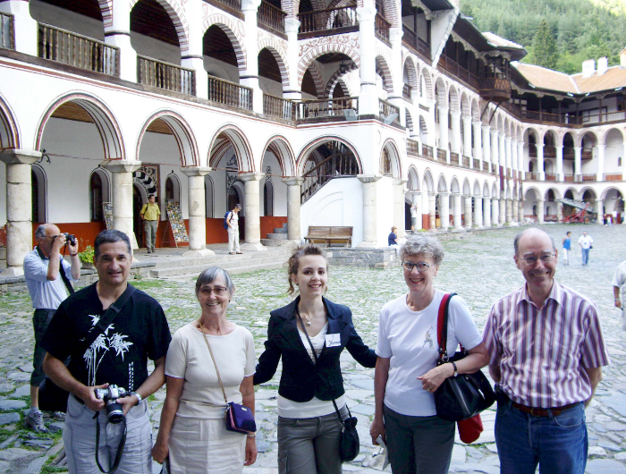

3 Динка двори мете
Dinka balaye la cour
(Deseta Rukovet - 10ème guirlande :03:44 - 04:25 )

Monastère de Rila (Bulgarie): une grande cour à balayer! (2008)
|
|
|

|
Version Mokranjac |
NOTES
| [1] Нисам могао да нађем другу верзију | [1] Je n'ai pas trouvé d'autre version |